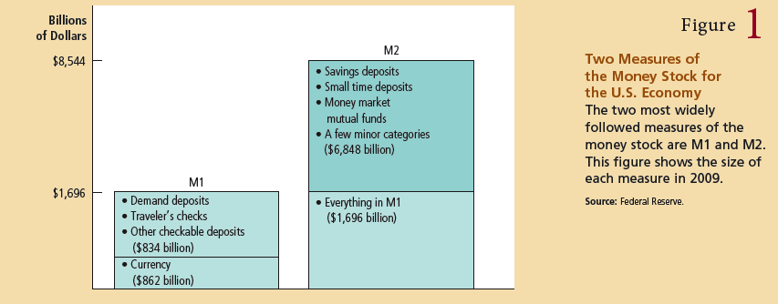
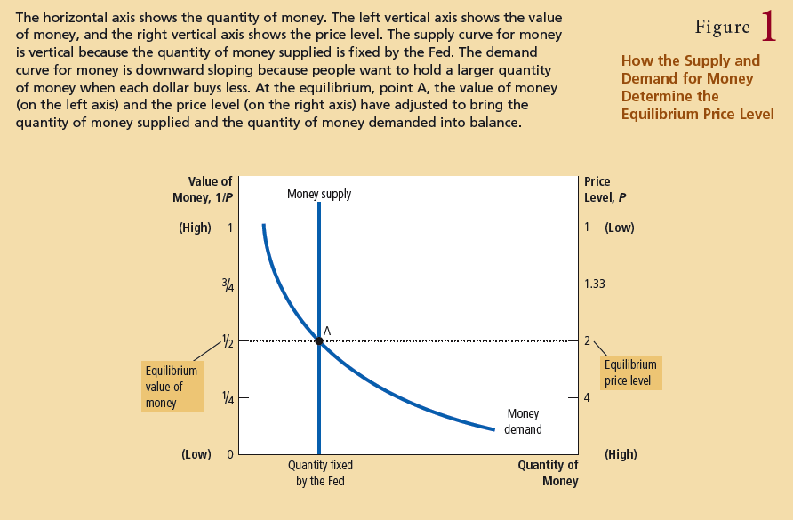
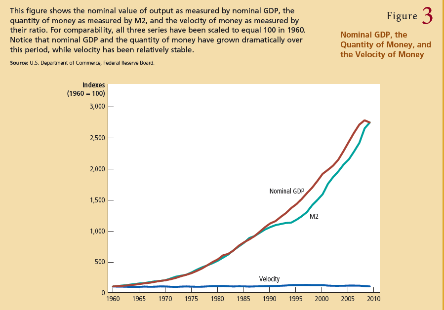
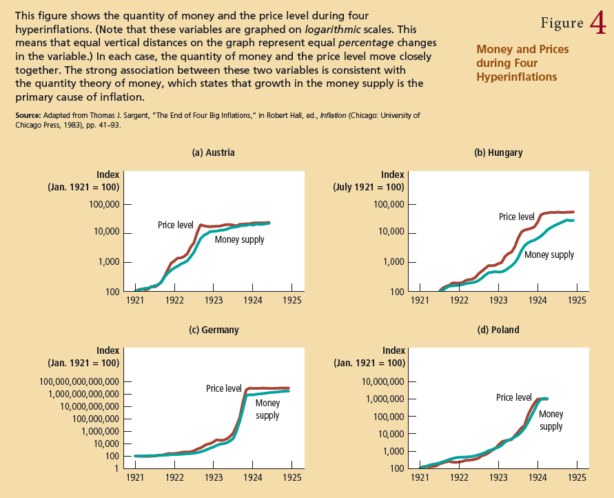
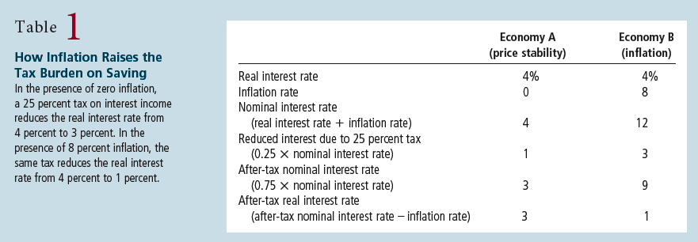

Chapter 29 & 30
Money is the set of assets in the economy that people regularly use to buy goods and services from each other.
A medium of exchange is an item that buyers to give to sellers when they purchase goods and services.
A unit of account is the yardstick people use to post prices and record debts
A store of value is an item that people can use to transfoer purchasing power from the present to the future.
liquidity is used to describe the easi with which an asse can be converted into the economy's medium of exchange.
Commonodity money is money that takes the form of a commodity with intrinsic value. (gold, cigareets at POW camps)
Fiat money is money without intrinsic value that is used as money because of government decree. (legal tender)
currency is the paper bills and coins in the hands of the public
demand deposits are balances in bank accounts that depositors can access on demand by writing a check

The Federal Reserve or Fed is the central bank of the United States.
The Federal Open Market Committee (FOMC) is responsible for setting monetary policy in the United States
A central bank is an institution designed to oversee the banking system and regulate the quantity of money in the economy.
The money supply is the quantity of money available in the economy.
Monetary policy is the setting of the money supply by policy makers in the central bank. br*2
it is worth noting here that the Fed’s primary tool is the open-market operation—the purchase and sale of U.S. government bonds. (Recall that a U.S. government bond is a certificate of indebtedness of the federal government.) If the FOMC decides to increase the money supply, the Fed creates dollars and uses them to buy government bonds from the public in the nation’s bond markets. After the purchase, these dollars are in the hands of the public. Thus, an openmarket purchase of bonds by the Fed increases the money supply. Conversely, if the FOMC decides to decrease the money supply, the Fed sells government bonds from its portfolio to the public in the nation’s bond markets. After the sale, the dollars it receives for the bonds are out of the hands of the public. Thus, an openmarket sale of bonds by the Fed decreases the money supply.
reserves are deposits that banks have received but have not loaned out.
fractional reserve banking is a banking system in which banks hold only a fraction of deposits as reserves.
a reserve ratio is the fraction of deposits that a bank holds as reserves
a bank is insolvent when it does not have enough to payoff its debt holders and depositors in full
excess reserves are reserves held by the bank that are above the lagal requirement - ie the reserve requirement
money multiplier is the amount of money the banking system generates with each dollar of reserves
leverage is the use of borrowed money to supplement existing funds for purposes of investment
capital requirement is a government regulartion specifying the minimum amount of bank capital
open-market operations are the purchase of sale and US government bonds by the Fed.
discount rate is the interest rate on the loans that the Fed makes to banks
reserve requirements are the regulartions on the minimum amount of reserves that banks must hold against deposits.
An increase in the reserve requirements raises the reserve ratio, lowers the money multiplier, and decreases the money supply. Conversely, a decrease in reserve requirements lowers the reserve ratop, raises the money multiplier, and increases the money supply.
the federal funds rate is the interest rate at which banks make overnight loans to one another

the quantity theory of money asserts that the quantity of money available determines the price level and that the growth rate in the quantity of money available determines the inlfation rate
a nominal variable is a variable measured in monetary units
a real variable is a variable measured in physical units
the classical dichotomy is the theory of seperation of the nominal and real variables
monetary neutrality is the proposition that changes in the money supply do not affect real variables
the velocity of money is the rate at which money changes hands

- The velocity of money is relatively stable over time
- Because velocity is stable, when the central bank changes the quantity of money (M), it causes proportionate changes in the nominal value of output (P X Y).
- The economy's output of goods and services (Y) is primarily determined by factor supplies (labor, physical capital, human capital, and natural resources) and the available production technology. In particular, because money is neutral, it does not affect output.
- With output (Y) determined by factor supplies and technology, when the central bank alters the money supply (M) and induces porportional changes in the nominal value of output (P x Y), these changes are reflected in changes in the price level (P).
- Therefore, when the central bank increases the money supply rapidly, the result is a high rate of inflation.

inflation tax is the revenue the government raises by creating money
the nominal interest rate is the interest rate you hear about at the bank
the real interest rate corrects the nominal interest rate for the effect of inflation to tell you how fast purchasing power of your account will rise over time.
when the Fed increases the rate of money growth, the long-run result is both a higher inflation rate and a higher nominal interest rate.
the Fisher effect is the one-for-one adjustment of the nominal interest rate to the inflation rate
shoeleather costs are the resources wasted when inflation encourages people to reduce their money holdings
menu costs are the costs of changing prices
